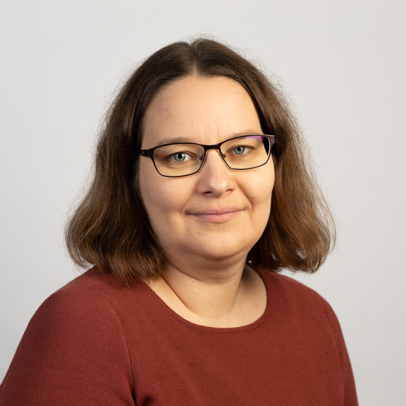
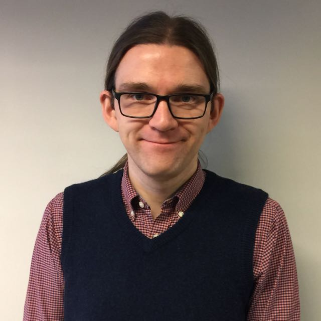
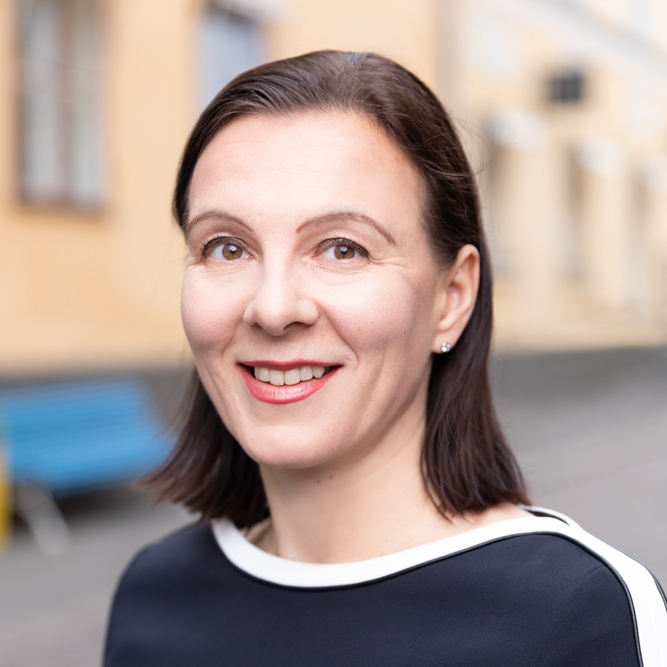

Algoritmileiri 3.–7.8.2020
Oletko 15–18-vuotias, pidät matematiikasta ja haluaisit oppia ongelmanratkaisua tietokoneella? Tämä leiri on sinua varten!
Leiri järjestetään elokuun alussa Espoon Nuuksiossa. Hae mukaan 1.3.2020 mennessä!
Mitä leirillä tehdään?
Leirillä opitaan ohjelmointia ja algoritmien suunnittelua. Keskeisiä kysymyksiä ovat, miten tietokoneita voi hyödyntää ongelmanratkaisussa ja suurten tietoaineistojen käsittelyssä sekä millaisia sovelluksia algoritmeilla on.
Leirin tarkoituksena on antaa hyvä yleiskuva aihepiiristä ja myös kannustaa opettelemaan lisää leirin jälkeen. Leirin ohjaajat ovat Helsingin yliopiston opettajia ja tutkijoita.
Toivomme leirille osallistujia monista eri taustoista. Emme odota aiempaa kokemusta leirin aiheista, mutta leiri tarjoaa haasteita myös jo alaa tunteville.
Leirille hakeminen
Voit hakea leirille 1.3.2020 asti, ja valitsemme osallistujat maaliskuun puoliväliin mennessä. Ennakkotehtävänä on pulma, jonka näet tästä. Mikä on lyhin ratkaisu, jonka löydät?
Leiri järjestetään Espoossa Hotelli Nuuksiossa. Leirille osallistuminen (majoitus, ruokailut, opetus) on ilmaista leirille valituille.
Tie yliopistoon
Leirillä kuulet myös, millaista on opiskella ja tutkia algoritmeja yliopistossa. Leirin keynote-puhujat ovat:
 Leena Salmela työskentelee akatemiatutkijana Helsingin yliopiston tietojenkäsittelytieteen osastolla. Hän tutkii algoritmeja, jotka käsittelevät biologista dataa, ja on erityisesti kiinnostunut algoritmeista merkkijonomuotoiselle datalle, jota on nykybiologiassa paljon. Kaikkien eliöiden perimä koostuu DNA-molekyyleistä, jotka voidaan esittää pitkinä merkkijonoina. Esimerkiksi ihmisen perimä on kolme miljardia merkkiä pitkä jono. Nykyiset mittalaitteet osaavat kuitenkin lukea kerrallaan vain lyhyitä pätkiä perimästä. Perimän kokoaminen näistä palasista muistuttaa ison palapelin kokoamista. Salmela on tutkinut algoritmeja, joilla näistä miljoonista lyhyistä palasista kootaan automaattisesti eliön koko perimä. Perimän tunteminen on keskeistä, kun halutaan ymmärtää, kuinka eliöt toimivat, miten maapallon elämä on kehittynyt ja mistä sairaudet johtuvat sekä kuinka ne voidaan parantaa. Kuva: Joel Grandell
 David Weir (he/him or they/them) is Associate Professor of gravitational wave cosmology, and Academy Research Fellow at the University of Helsinki. He uses large simulations of the first moments after the Big Bang to try to explain how the universe got the way it is today. Employing thousands of computer cores and as much as a million CPU-hours, he is working to model the way in which the events of the early universe leave behind an echo, as a background of gravitational waves. This background can potentially be picked up by future gravitational wave experiments, such as the European Space Agency LISA mission. He is also interested in wellbeing issues, and making academia a kinder place for everyone.
 Laura Ruotsalainen toimii Helsingin yliopiston tietojenkäsittelytieteen osastolla apulaisprofessorina tutkimusalanaan spatiotemporaalinen data-analyysi kestävyystieteessä. Hänen tutkimusryhmänsä keskittyy konenäkö-, estimointi- ja koneoppimisalgoritmien kehittämiseen tarkan ja luotettavan navigointidatan muodostamiseksi ja hyödyntämiseksi kestävyystieteen tarpeisiin, erityisesti älykaupunkien kehittämisessä. Ruotsalainen vetää lisäksi Research Alliance for Autonomous Systems (RAAS)- verkostossa työryhmää, joka keskittyy mm. automaattiajoneuvojen ja droonien kehittämiseen.
Edustamaan maailmalle?
Suomesta lähtee joka vuosi lukiolaisjoukkue kansainvälisiin algoritmiikan olympialaisiin (International Olympiad in Informatics). Vuonna 2021 aloittaa myös uusi tytöille suunnattu kilpailu (European Girls’ Olympiad in Informatics).
Saat leirillä tietoa olympialaisista ja voit miettiä, haluaisitko harjoitella ja osallistua niihin.
Yhteystiedot
Jos haluat kysyä jotain leiristä, voit lähettää viestin leirin koordinaattorille (Antti Laaksonen, ahslaaks@cs.helsinki.fi).